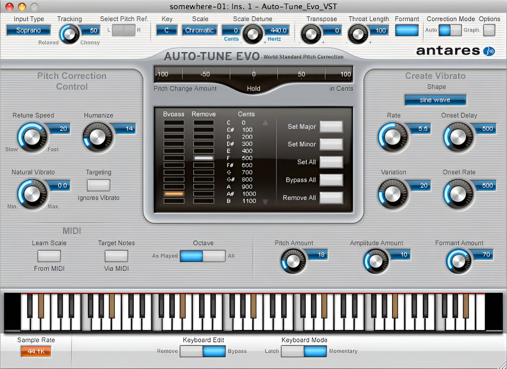
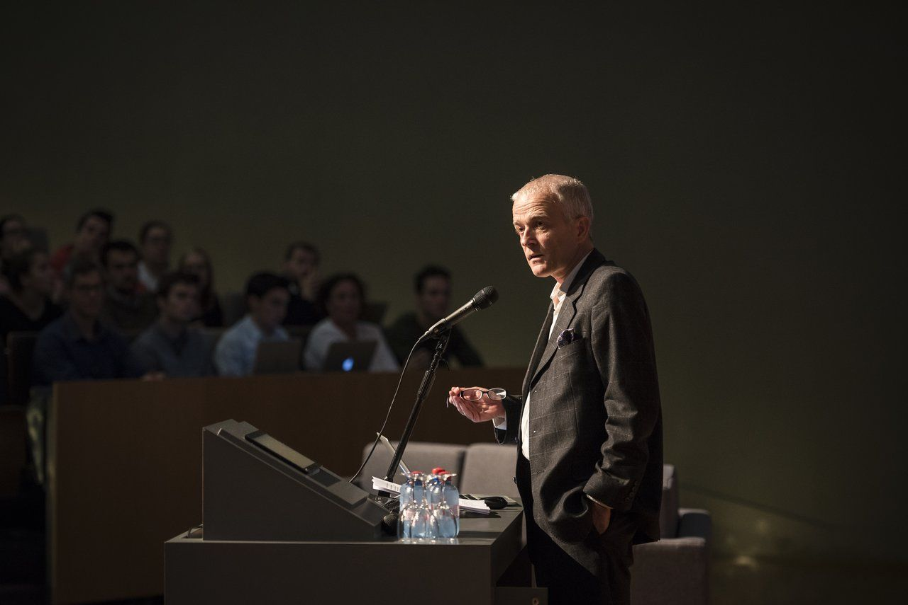
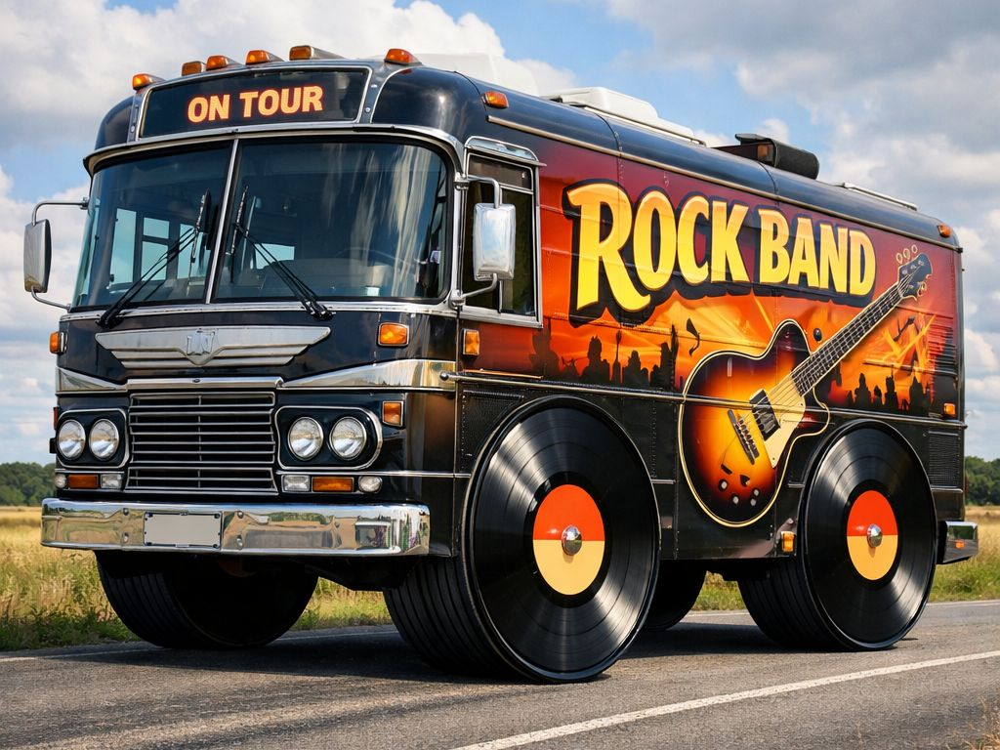
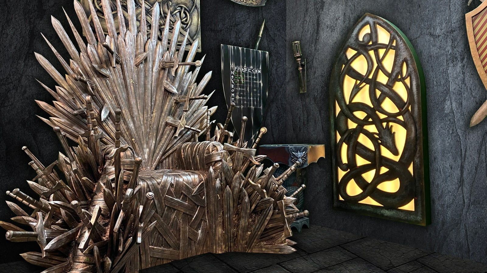
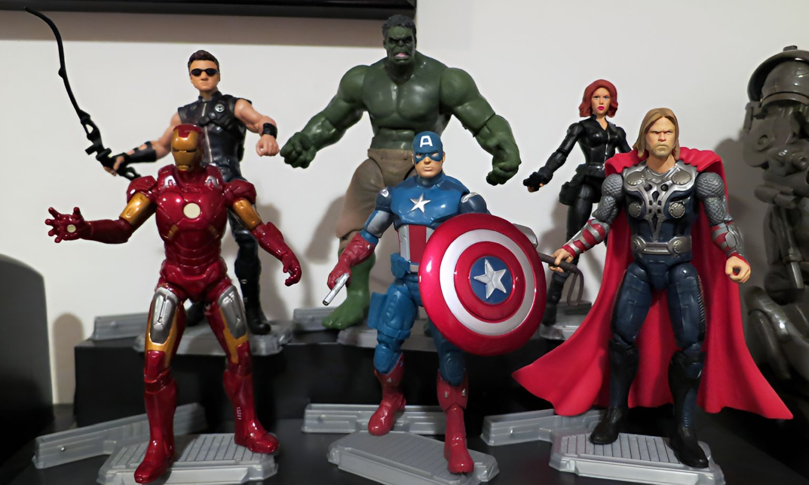

Megrendezik a nyíltan doppingos versenyeket!
Sokáig csak provokatív ötletnek, internetes túlzásnak vagy cinikus sportipari poénnak tűnt, most azonban egyre komolyabban beszélnek róla...
 Cikkek: 6
Cikkek: 6
A modern életmód és egészségtudatosság elkötelezett képviselője, aki egyszerre sport szakember és szenvedélyes szakács. Munkájában az edzés, a táplálkozás és a gasztronómiai élmény összhangját vizsgálja, miközben figyelemmel kíséri, hogyan formálják az új trendek és alapanyagok az emberek étkezési szokásait és teljesítményét. Leginkább azokat a megoldásokat keresi, amelyek nemcsak hatékonyak, hanem élvezetesek is, és hosszú távon hozzájárulnak a testi-lelki egyensúlyhoz.
Sokáig csak provokatív ötletnek, internetes túlzásnak vagy cinikus sportipari poénnak tűnt, most azonban egyre komolyabban beszélnek róla...
Furcsán hangzik, de néha a vereség a legjobb stratégia. Egyes sportolók tudatosan veszítenek, hogy jobb ellenfelet kapjanak később, vagy elkerüljenek egy erősebb ágat.
Képzeld el, hogy a város, ahol élsz, folyamatosan figyeli és optimalizálja a működését. Közlekedés, energiafogyasztás, közbiztonság – minden adatvezérelt.
 Cikkek: 5
Cikkek: 5
A vizuális kultúra és a science fiction világának rajongója, aki különösen a digitális történetmesélés és a kortárs online esztétika iránt érdeklődik. Szívesen ír olyan témákról, ahol a mozgókép, a design és a hétköznapi technológia találkozik.
A Mátrix első huszonöt perce már elképesztő sűrűségben van tele elrejtett jelentésekkel: szimbólumokkal, filozófiai utalásokkal és finom előreutalásokkal — olyannyira, hogy sok film teljes játékideje alatt sem jut el idáig.
A Jurassic Park forradalmasította a látványvilágot, de nem minden dinoszaurusz készült számítógéppel.
Egy kisboltban egy nap minden megváltozott: a dolgozók egyszerűen eltűntek a pult mögül egy rövid időre...
Az újságírás és tanácsadás iránt elkötelezett szakember, aki érzékenyen reagál a társadalmi és gazdasági folyamatokra. Írásaiban és elemzéseiben a különböző nézőpontok feltárására törekszik, miközben gyakorlati tanácsokkal segíti az eligazodást a gyorsan változó világban. Kiemelt figyelmet fordít arra, hogyan hatnak a médiában és a kommunikációban megjelenő trendek a közönség gondolkodására és döntéseire. Leginkább azokat a témákat és megoldásokat keresi, amelyek értéket közvetítenek, és hosszú távon is iránymutatást adnak.
A nézők csak a pályát látják, de a stadionok mögött egy teljes külön világ működik...

Az autotune neve mára szinte egyet jelent a „hamis énekkel”, de a valóság ennél árnyaltabb. Eredetileg finom hangjavításra tervezték, ma viszont sok esetben kreatív eszközként használják.

Egy céges meeting, egy komoly prezentáció… és teljes káosz. Az előadó magabiztosan kezdett bele, de pár perc után egyre nyilvánvalóbb lett: valami nincs rendben.
Humorista és színész, aki a színpadon és a vásznon is otthonosan mozog. Sajátos stílusában ötvözi a hétköznapi megfigyeléseket, az öniróniát és a popkultúra kifigurázását. Írásaiban és fellépéseiben gyakran reflektál arra, hogyan válik a modern szórakoztatás egyszerre abszurddá és túlságosan is ismerőssé. Azokat a történeteket keresi és meséli el, amelyek egyszerre nevettetnek meg és mutatnak rá a valóság furcsa oldalára.

Vannak turnésztorik, amelyekből legendák lesznek... és vannak olyanok, amikor a zenekar egyszerűen rossz városba érkezik meg. Ez pontosan egy ilyen történet.

A Trónok harca fináléja rengeteg vitát váltott ki, de kevesen tudják, hogy több alternatív befejezés is szóba került.
Sokan azt gondolják, hogy az utazás drága hobbi – pedig némi tudatossággal meglepően olcsón is bejárhatod Európát.
A bloggerként és sportedzőként tevékenykedő szakember szenvedélyesen foglalkozik az egészséges életmóddal és a teljesítmény fejlesztésével. Írásaiban és edzéseiben egyaránt arra törekszik, hogy motiválja és inspirálja közönségét, miközben gyakorlati tanácsokat ad a hatékony edzésről és a tudatos életvitelről. Figyelemmel kíséri a legújabb fitnesztrendeket és módszereket, és azokat közérthető, személyes hangvételben osztja meg. Leginkább azokat a megközelítéseket keresi, amelyek fenntartható fejlődést és valódi eredményeket hoznak.
A modern futball egyre inkább az adatokra épül, de mi történik, ha már nem is ember hozza a döntéseket?
Egy koncertjegy ára ma már sokszor egy kisebb vagyon, és a rajongók egyre gyakrabban panaszkodnak. De mi áll a drágulás mögött?

A kvantumszámítógépek nem egyszerűen gyorsabbak – teljesen másképp működnek.
 Cikkek: 6
Cikkek: 6
Turisztikai szakértő és szenvedélyes túrázó, aki folyamatosan új helyeket fedez fel itthon és a környező régiókban. Írásaiban a természetközeli élményeket, a rejtett útvonalakat és a kevésbé ismert látnivalókat helyezi előtérbe. Különösen érdekli, hogyan lehet egy-egy kirándulást valódi élménnyé formálni, legyen szó könnyű sétáról vagy komolyabb túráról. Azokat a helyeket keresi, amelyek nemcsak látványosak, hanem hosszú távon is emlékezetesek maradnak.
Magyarország tele van olyan helyekkel, amelyek első látásra is különlegesek, de igazán akkor mutatják meg magukat, ha egy kicsit jobban elidőzöl bennük.
Egy költözés, egy félreértés, és egy egészen elképesztő történet. Egy férfi beköltözött egy lakásba, amit teljesen a sajátjának hitt – és ott élt éveken át.

A mesterséges intelligencia fejlődése eddig is elképesztő volt, de most egy új szintre lépett: már nem csak emberek fejlesztik, hanem saját magát is képes optimalizálni.
 Cikkek: 6
Cikkek: 6
A modern popkultúra lelkes követője, aki egyszerre rajong a zenéért és a filmekért. Kritikáiban a hangzásvilág, a ritmus és a filmes élmény kapcsolatát vizsgálja, miközben figyelmet fordít arra is, hogyan változtatja meg a streaming és a digitális platformok a közönség ízlését. Leginkább azokat az alkotásokat keresi, amelyek érzelmileg is hatnak, és maradandó élményt nyújtanak.
Ez az AI nem egyszerű eszköz: döntéseket hoz, projekteket indít, és konkrét feladatokat oszt ki zenészeknek.

A Marvel-filmek nemcsak rekordokat döntöttek, hanem elképesztő fizetéseket is hoztak a főszereplőknek. De mennyit kaptak valójában a Bosszúállók sztárjai?
Egy irodában különös jelenségre lettek figyelmesek: a kávéautomata mindig „jókor” adott ki kávét.
Az operatőrként és vágóként dolgozó alkotó szenvedélyesen formálja a vizuális történetmesélést. Munkájában a képi világ, a fények és a kompozíció összhangját keresi, miközben a vágás ritmusával és dinamikájával teremti meg a történetek végső hangulatát. Kiemelt figyelmet fordít arra, hogyan erősíti egymást a felvétel és az utómunka, és hogyan válik egy nyers anyagból érzelmileg hatásos, koherens alkotás. Leginkább azokat a projekteket keresi, amelyek vizuálisan is karakteresek, és maradandó élményt nyújtanak.
A Star Wars sikere korántsem volt garantált. A kulisszák mögött hozott döntések azonban alapjaiban formálták a franchise jövőjét.
Ma már elég egy jól eltalált 15 másodperces részlet, és egy dal pillanatok alatt világhírűvé válhat.
Új energiaforrások kutatása zajlik világszerte, amelyek teljesen átalakíthatják az energiatermelést.
 Cikkek: 5
Cikkek: 5
A technológia és informatika elkötelezett szakértője, aki folyamatosan követi a digitális világ legújabb trendjeit. Elemzéseiben a szoftverek, rendszerek és innovációk működését vizsgálja, különös figyelmet fordítva arra, hogyan alakítják a felhasználói élményt az új technológiák és online platformok. Leginkább azokat a megoldásokat keresi, amelyek hatékonyak, előremutatóak, és hosszú távon is értéket teremtenek.

Vannak eszközök, amelyek egyszerűen csak megoldanak egy problémát, és vannak olyanok, amelyek egy egész életformáról kezdenek el új nyelven beszélni.

Miközben mindenki Párizsba, Rómába vagy Barcelonába utazik, Európa tele van kevésbé ismert, mégis elképesztően szép városokkal.
Mi lenne, ha az elmédet egy számítógépben lehetne tárolni? A tudat digitalizálása ma még sci-fi, de a kutatások már zajlanak.
Szabadúszóként és gyógypedagógusként dolgozó szakember, aki elhivatottan támogatja az egyéni fejlődési utakat. Munkájában a rugalmasságot és a személyre szabott megközelítést ötvözi, különös figyelmet fordítva a különböző képességekkel és szükségletekkel rendelkező emberek támogatására. Tapasztalatait és módszereit közérthetően osztja meg, miközben célja, hogy erősítse az önbizalmat és elősegítse az önállóságot. Leginkább azokat a megoldásokat keresi, amelyek hosszú távon is segítik a fejlődést és a beilleszkedést.
A Spotify listái első ránézésre a hallgatók ízlését tükrözik, de a valóság ennél jóval összetettebb.
Egy egyszerű videóval indult minden, amit csak poénból töltöttek fel. Na és ki a főszereplő? Egy kutya.
Nincs idő hosszú utazásra? Nem is kell. Néha egy jól megválasztott hétvégi kiruccanás is elég ahhoz, hogy teljesen feltöltődj.